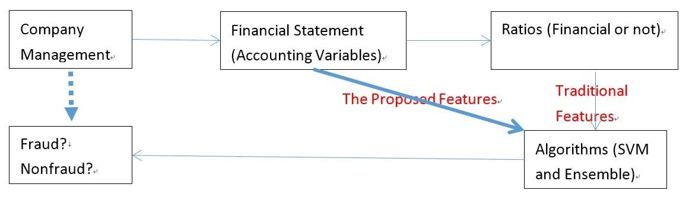

Bài Báo 1 JAR & ACML Landmark
1. Phát Hiện Gian Lận Kế Toán Bằng Tiếp Cận Học Máy & Dữ Liệu BCTC Thô
Detecting Accounting Frauds in Publicly Traded U.S. Firms via a Machine Learning Approach
Công trình đột phá của Li, Yu, Zhang, Ke (mở rộng trên JAR 2020): Chứng minh việc dùng 24 biến kế toán thô vượt trội hoàn toàn so với việc dùng các tỷ số tài chính chọn lọc thủ công (Dechow F-score, Beneish M-score). Giải quyết mất cân bằng lớp cực đoan (0,7% gian lận) qua Biased-Penalty SVM và BalancedCascade đạt Balanced Accuracy 77,53%.